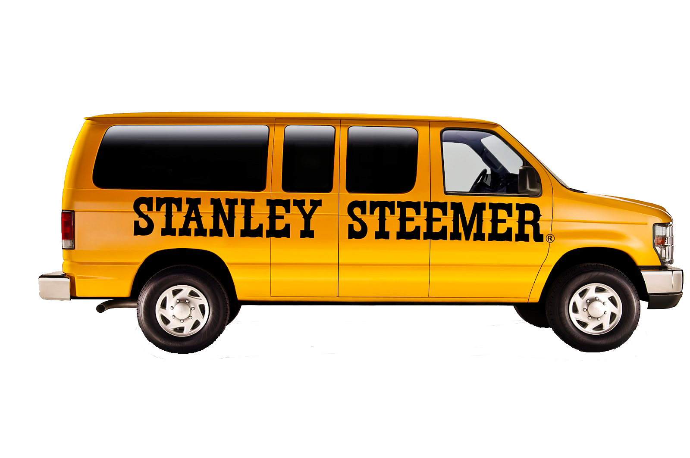
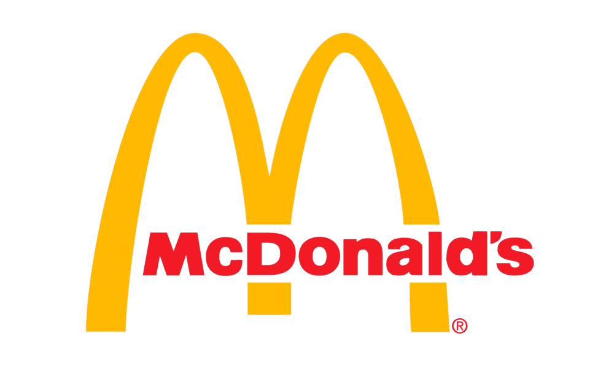

What I Learned:
- Implementation of Aeronautical Systems
- Drone Archeology
- Electrical Systems of Multiple Drones
- Systematic Processes of General Software Engineering
- Subversion, Vagrant, C Programming Language
What I Enjoyed:
- Having my own Cubicle
- Having 4 Monitors, Standing Desk
- Very Professional Workplace Environment
- Motivating and Empowering Manager
- Helpful and Easy to Talk to Coworkers
What I Learned:
- CMake Language
- Python QT Library
- Linux & Virtual Machines
- Datalinks between Naval Boats and Airships
What I Enjoyed:
- Working 100% Remotely
- The Family Like Team
What I Learned:
- PostgreSQL Databases
- Windows Command Line Interface
- Mobile App Development through React Native
- Dataclass Configuration through Django and PostgreSQL
- Data Storage using AWS S3 Buckets
What I Enjoyed:
- Working at Any Time
- Working with a Brilliant Team of Developers
- Playing Chess with the CEO and CTO everyday
What I Learned:
- Tutoring Documentation
- Best Practices for Tutoring
- How to Keep a Strong Transparent Communication with both the Student and Parent
What I Enjoyed:
- Being Able to Acquire Student's so Easily
- Having a Support Team to discuss Tough Situations With
What I Learned:
- Time Management
- How to Mentor and Teach both Students and Tutors
- How to Manage Multiple Students across Multiple Tutors
- To Never Work for Money, but for the Purpose it Brings You
What I Enjoyed:
- Sharing Wonderful Teaching Moments with Students
- Being my Own Boss
-
Being able to be a Part of Students' Lives as I Guide them to Opening More and More
Doors of Opportunities
What I Learned:
- How to Run a Business from an Analytical Point of View
- Utilize MS Excel to analyze Sales Data
- Implement Business Systems such as Payroll and Inventory Management
What I Enjoyed:
- The Room for Growth
- The Amount of Responsibility

What I Learned:
- The Humbling Experience of Labor Workers
- Cable Management
- Best Cleaning Practices
What I Enjoyed:
- Working with People with all Different Types of Lives
- The Long 13 Hour Days

What I Learned:
- To Work in a Professional Office
- Information on Insurance Services
What I Enjoyed:
- Air Conditioning
- Desk Setup
- Free Monster Energy Drinks

What I Learned:
- Customer Service
- Attention to Detail
- To Work Efficiently under High Pressure
- Always Put my Best Foot Forward
What I Enjoyed:
- The Sense of Community from all the Coworkers and Customers
- The Flexible Schedule
- The Free Food